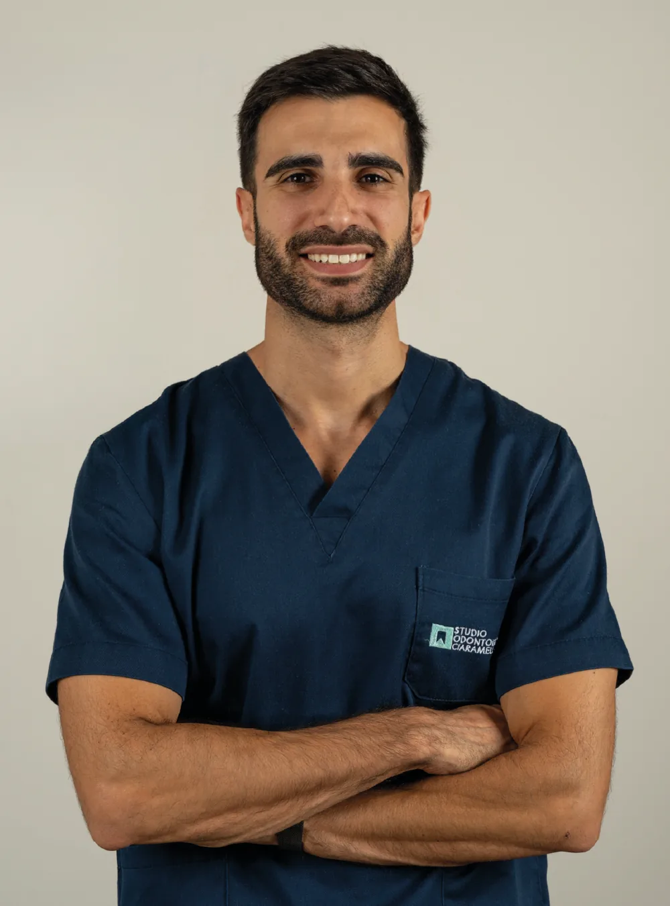
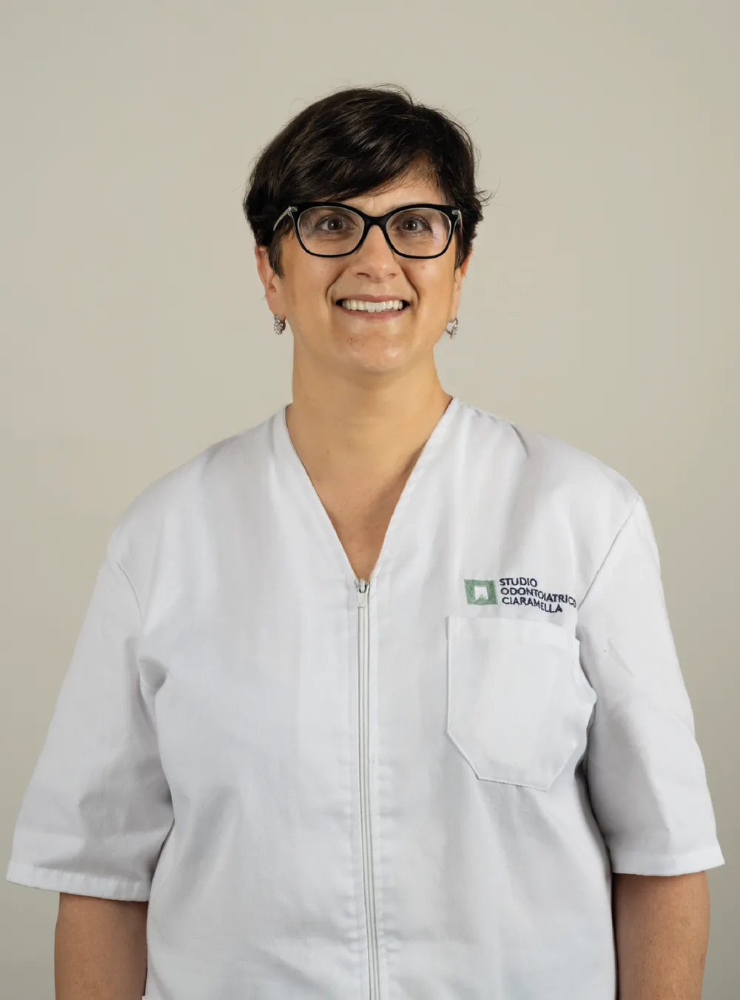
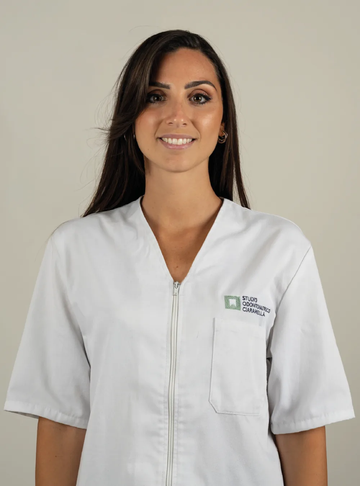

Il team
1

Dott. Francesco Ciaramella
Odontoiatra
Formazione
Laureato con lode presso l’Università degli Studi di Napoli Federico II nel 2010.
Aree di interesse
- Conservativa
- Protesi dentaria
- Implantologia
- Parodontologia
- Chirurgia orale
Corsi di perfezionamento
- 2014: Corso annuale in endodonzia con il Dott. Flavio Palazzi (Napoli)
- 2017: Corso annuale in parodontologia con il Dott. Carlo Ghezzi presso Meg di Melegnano (Milano)
- 2021: Corso annuale in protesi fissa con il Prof. Primo Galletti presso Nexxta spa (Modena)
- 2022: Corso in protesi fissa in zona estetica e faccette dentali con il Prof. Primo Galletti presso Nexxta spa (Modena)
- 2023-2024: Master in medicina estetica presso IAPEM (Milano)
- 2025: Corso semestrale in Rigenerazione Ossea Guidata (GBR) con il Dott. Marco Ronda (Genova)
2

Anna
Addetta alla segreteria
3

Giusy
ASO